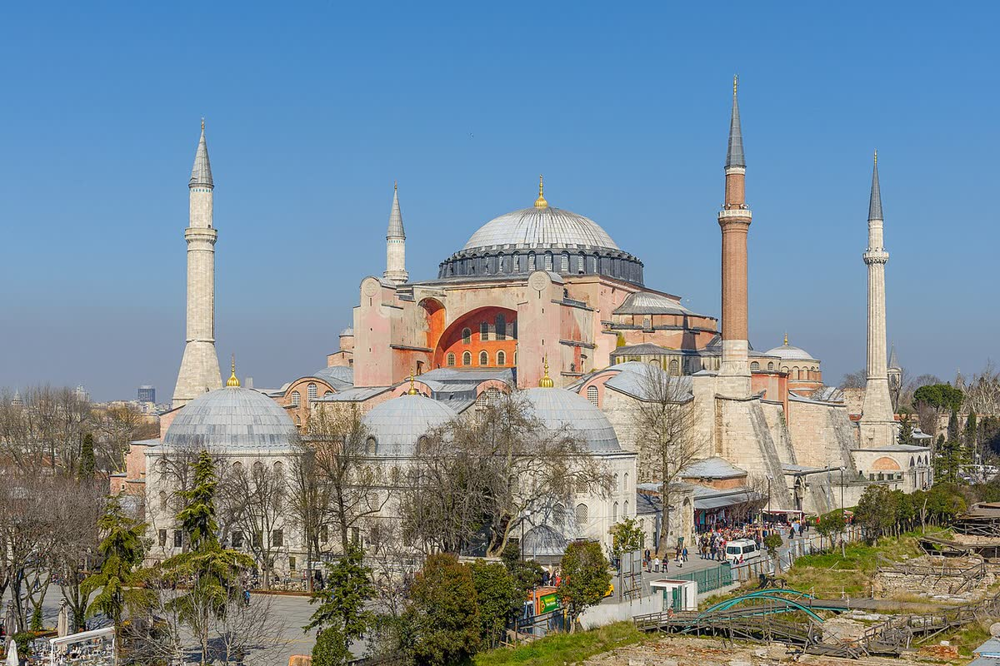

Ayasofya va Sultonahmet Maydoni
Fotih (Sultonahmet)
- Ko'k Masjid: BEPUL • Ayasofya galereyasi: €25 (~1,400 TL)
- T1 Tramvay (Bağcılar - Kabataş), Sultanahmet bekati (2 daqiqa piyoda)
- Har kuni 09:00 - 19:30
Agar €25 to'lamoqchi bo'lmasangiz, Ko'k Masjid (Sultanahmet Camii) ichiga mutlaqo BEPUL kirishingiz mumkin!